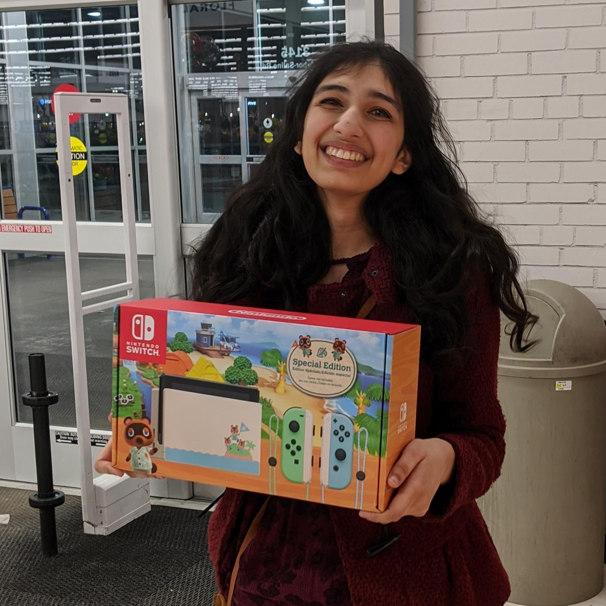
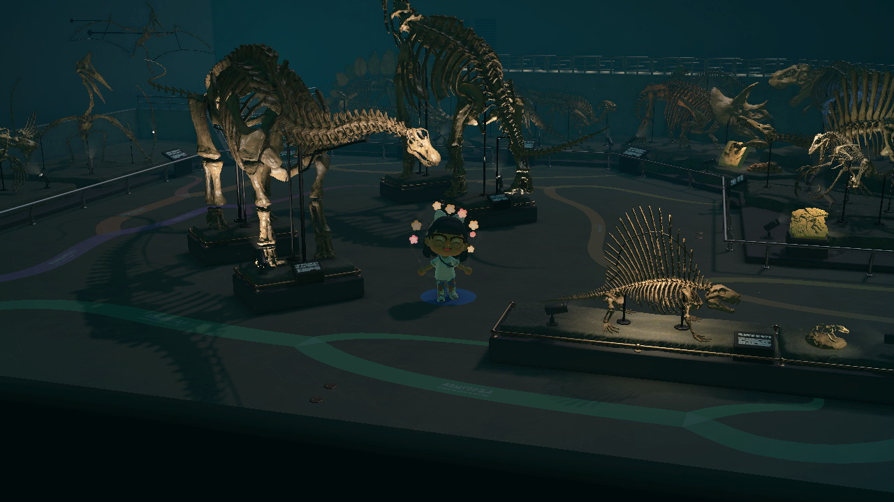
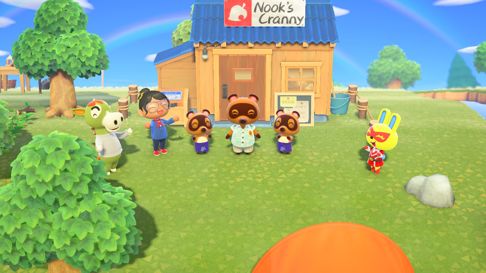
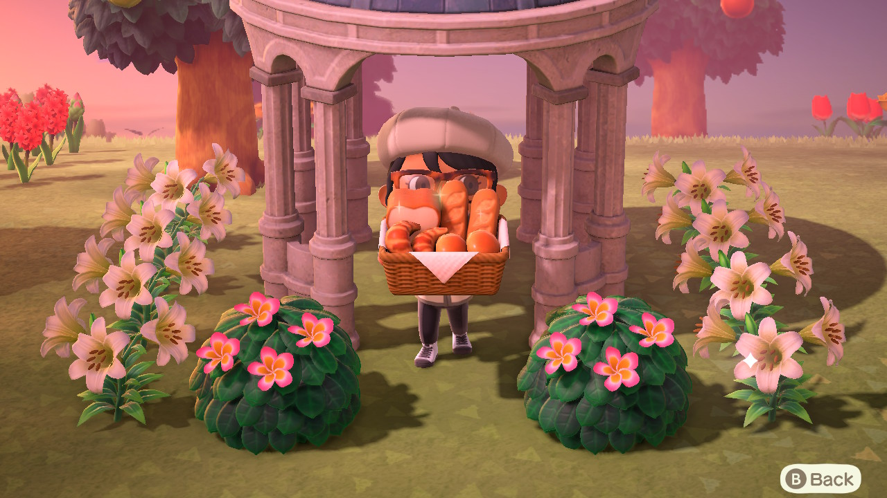
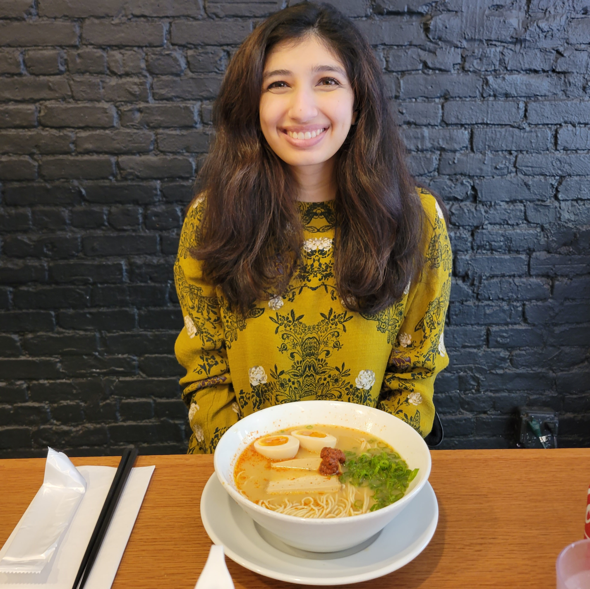

About Me (Informal)
When not working with my fellow scientists, I also collaborate frequently with Tom Nook in real estate endeavors, where I have applied my experience in biology to uncover a full fossil collection that has contributed to the meteoric rise of our island to a five star rating.





When not studying living things, I can often be found consuming them. I am a connoisseur of chocolate, boba, cookies, and other cultivated foods.